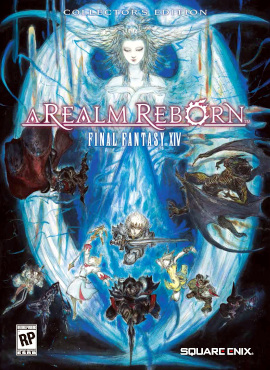

Thomas Bradley Bio
Bio

I am Thomas Edward Bradley. I was born in Stonybrook, New York and have lived in Suffolk County for nearly my entire life. My favorite thing to do in my free time is playing video games. I've been a gamer since I was 6 years old, and seeing all of the stories and worlds I have explored has inspired me to seek the game design career.
As for my identity, I have autism, and it has altered my way of speech and my outlook on life, driving me to think of new concepts and ideologies that wouldn't occur to others. Being high on the Aspergers spectrum has also affected the way others see me as a person, but from experience I have learned not to care about the way other people see me based off factors I cannot control.
Schooling
- Bellport Academic Center
- Rocky Point Middle School
- Elmer Thienes - Mary Hall Elementary School
Hobbies
- Gaming
- Imagination
- Comedy